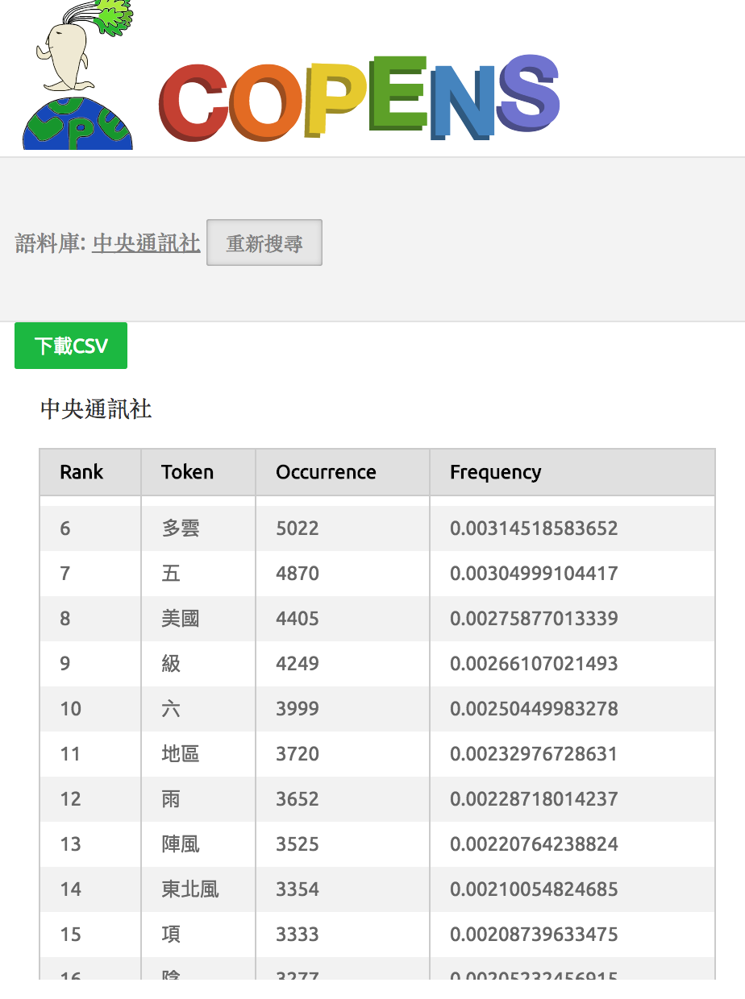
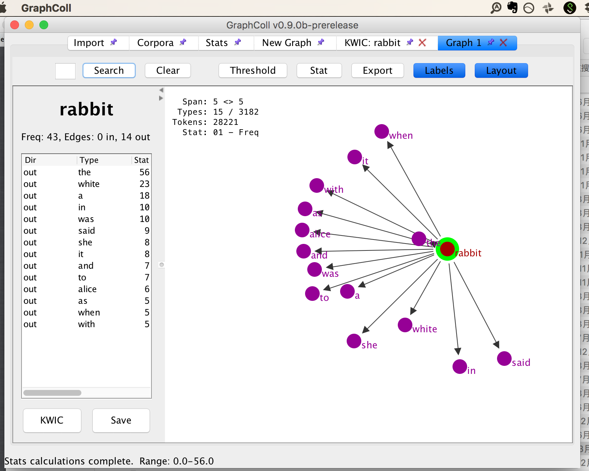
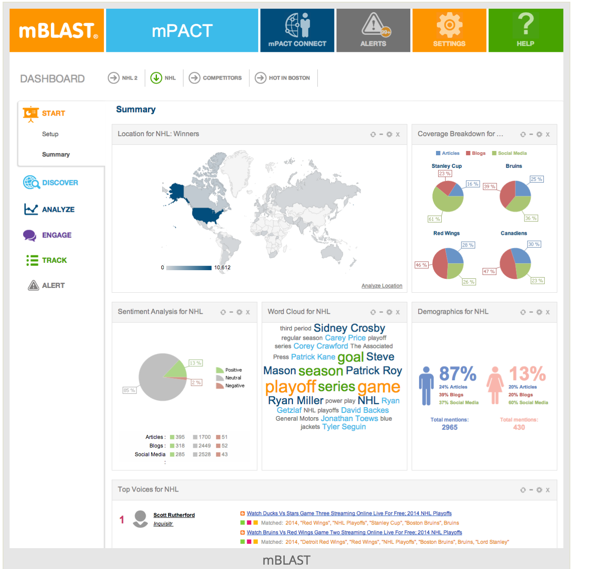
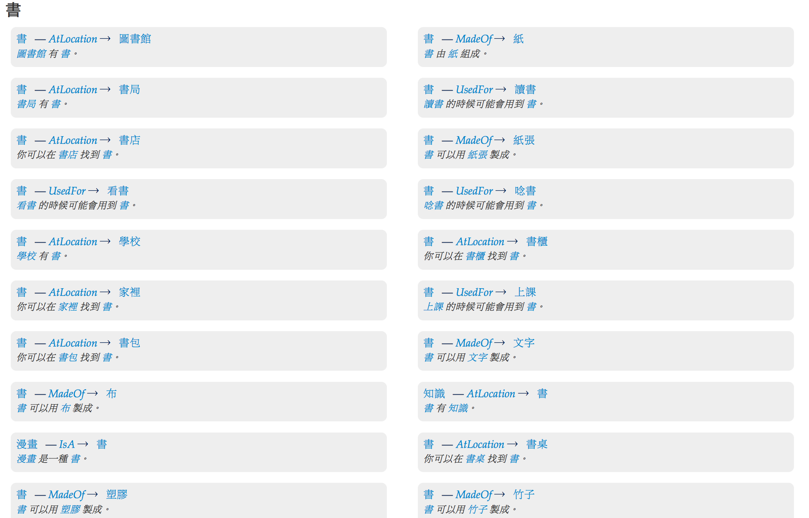
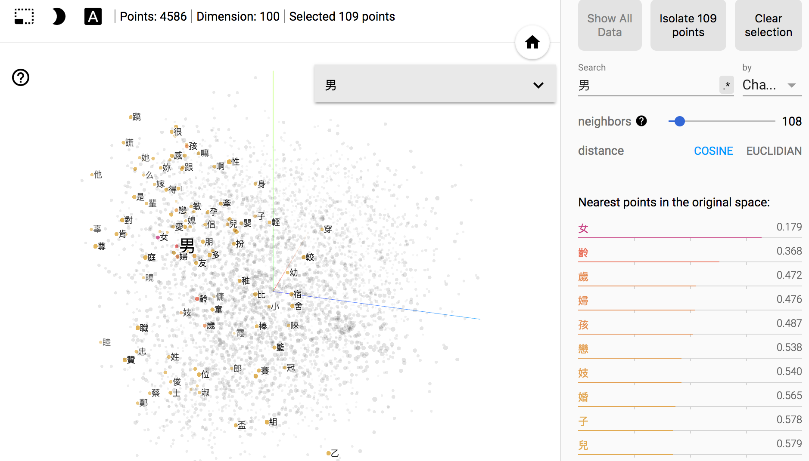

Sensor, social sensor in the networked age (工業 4.0)
Revisiting the definition of corpus (Become fully electronic in 1989)
History of Corpus Linguistics
不再有趣的辯論
Chomskyan linguistics and corpus linguistics: Introspection and intuition vs attested instances of authentic language
Text archive/Database, Corpus, and the Web (aka. Google as Corpus)
Corpus.Linguistics: Definition
Long-established definition/applications of corpus
as a collection of authentic (naturally occurring) language, either written or spoken, which has been compiled for a particular purpose.(Sinclair 1991, Stubbs 1996, Hunston 2002)
Corpus.Linguistics: 有事嗎
(Candlin and Hall (eds.) 2012)
Corpus.Linguistics: Methodology
corpus-based, corpus-driven, ...
appropriate corpus size, representativeness, (genre) balance
The need for a ‘sizeable sample of real-life usage’ to ensure there exists adequate evidence for generating or testing hypotheses about the language.Sampson (2001: 6)
Corpus.Linguistics: Tools
工具不是萬能，沒有工具萬萬不能。
請放下語言學家的尊嚴
手中有了錘子，看什麼都是釘子
Corpus Tools
Concordance (是怎麼玩壞語料庫語言學的)
妳會看幾頁的 google search results?
Corpus Tools
word and ngram frequency

Corpus Tools
colligation and collocation (network)
(GraphColl, Brezina et. al. 2015)

Corpus tools + Data Science
Profile, Dashboard, visualization

Corpus Tools + Data Visualization
motion chart for dynamic visualization of language change
Corpus Tools + Natural Language Processing
Corpus Linguistics in a Post-concordancer Era [Wang, 2017].
it ignores the sentence boundaries in texts and, as a result, the researchers miss the opportunities to automatically analyze the texts at sentence level;
the tool also provides little information about the syntactic functions of the words in the corpora, which can be revealed through more recent tools such as Stanford parsers (http://nlp.stanford.edu:8080/parser/) and SyntaxNet.
Corpus Tools: Summary
query, extraction, statistics, visualization
Exploratory Data Analysis ?
Summary of main limitations
(Candlin and Hall, 2012)
Corpora can never be fully representative as they are delimited by size
A corpus presents decontextualised language data divorced from its original context. (Aston 1995; Widdowson 1998)
due to these technological restrictions, corpus investigations over-emphasise single word forms and collocations at the expense of more discourse-based features of language.
Outline
Background
Social Media and Corpus Linguistics
Challenges
Conclusion
How social media is changing Language/Corpus linguistics/NLP
Developing Linguistic Annotation for Machine Learning Algorithms
Now is the Golden Age of Text Analysis
Annotation
標記是語言學家的當代逆襲
Associating a label (metadata) with specific content in a document.
Annotation can be everywhere:
Image labeling
Sarcasticm
Event
can probably tackle with null elements (Tao, 2017)?
Lopotator
我們需要彈性的工具
語料庫還能怎樣？本體知識融入
語料庫還能怎樣？常識規整

社會性與歷史性
social network and lexical network (and brain network)
diachronic word embeddings and thesarus

從言談的舞蹈與音樂性到情緒分析
How can we know the dancer from the dance” (William Butler Yeats)
verbal mimicking
From Corpus to Knowledge
Korpus: Knowledge-yielding corpus
Combining paradigmatic resources (WordNet)
lexico-grammatical pattern acquisition
Diachronic character/word embeddings
Outline
Background
Social Media and Corpus Linguistics
Challenges
Conclusion
My two cents
This is a good time to become a corpus linguist.
Reinventing education of linguistics
Corpus as Social Sensor
大智移雲時代脈絡下的語料庫創新
Chatbot 終將一統江湖？
Thank you
Reference
[1] J. Pannebaker. 2011. The secret life of pronouns: what our words say about us. Bloomsbury Press.
[2] Candlin and Hall (eds.) 2012. Corpora and language education. Lynne Flowerdew.
[3] Wang S.H. (2017) Text Analysis of Corpus Linguistics in a Post-concordancer Era. In: Wu TT., Gennari R., Huang YM., Xie H., Cao Y. (eds) Emerging Technologies for Education. SETE 2016. Lecture Notes in Computer Science, vol 10108. Springer.


 (Candlin and Hall (eds.) 2012)
(Candlin and Hall (eds.) 2012)